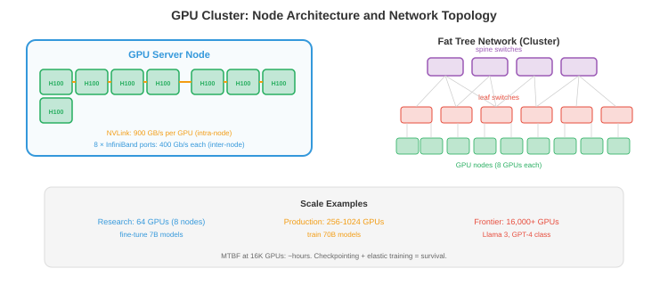

大规模基础设施¶
构建服务数百万用户的系统需要的不只是单个服务器。本文件涵盖可扩展性模式、分布式系统基础、微服务、数据流水线、数据库扩展、搜索和向量系统、可观测性、可靠性工程以及CI/CD
- 每秒服务1个请求的模型可以在笔记本电脑上运行。每秒服务100,000个请求且可用性达到99.9%需要分布式系统、自动故障转移和精心设计的数据流水线。本文件涵盖弥合这一差距的模式。
可扩展性¶
- 垂直扩展（向上扩展）：换更大的机器。更多CPU、更多内存、更大的GPU。简单但有硬性限制（最大的可用机器）和单点故障。
- 水平扩展（向外扩展）：增加更多机器。每台处理一部分流量。没有单机限制，但需要：负载均衡（文件01）、数据分区和处理分布式状态。
- 无状态服务默认是可水平扩展的。在负载均衡器后面添加更多实例即可。在启动时加载权重并独立处理请求的模型推理服务器是无状态的——任何实例都可以处理任何请求。
- 有状态服务（数据库、KV缓存、特征存储）更难扩展。状态必须在多台机器间分区（分片，文件01）并复制以实现容错。
- 可扩展性方程：对于一个有\(n\)台服务器的系统：
- 理想情况：吞吐量线性扩展（\(n\)台服务器→\(n\times\)吞吐量）。
- 实际情况：协调、负载均衡和数据传输的开销意味着吞吐量亚线性扩展。阿姆达尔定律（第13章）适用：串行部分（共享状态、协调）限制了加速比。
分布式系统¶
- 分布式系统是一组协调提供服务器的机器。基本挑战：
- 网络分区：机器不能总是通信。网线被切断、交换机故障、数据中心断电。系统必须处理部分故障。
- 时钟偏差：机器有不同的时钟。"事件A发生在机器1的10:00:01"和"事件B发生在机器2的10:00:01"并不意味它们同时发生。逻辑时钟（Lamport时间戳、向量时钟）建立排序而不依赖物理时钟。
- 共识：多台机器如何就某个值达成一致（例如，谁是领导者）？Raft是标准的共识算法。一组节点选举一个领导者。领导者处理所有写入。如果领导者失败，剩余节点选举新的领导者。需要多数（5个节点中的3个）才能运行，因此能容忍\(\lfloor(n-1)/2\rfloor\)个故障。
- 分布式锁：确保只有一台机器执行关键操作。Redlock（基于Redis）跨多个Redis实例获取锁。如果多数实例授予锁，则获取成功。用于：防止重复的模型部署，确保只有一个训练作业写入检查点。
微服务¶

- 微服务将系统分解为小型、独立可部署的服务。每个服务拥有一个领域：
┌─────────────┐ ┌──────────────┐ ┌─────────────┐
│ API网关 │→ │ 特征服务 │→ │ 特征数据库 │
└─────────────┘ └──────────────┘ └─────────────┘
│
├────────→ ┌──────────────┐ ┌─────────────┐
│ │ 模型服务 │→ │ 模型存储 │
│ └──────────────┘ └─────────────┘
│
└────────→ ┌──────────────┐ ┌─────────────┐
│ 日志服务 │→ │ 日志存储 │
└──────────────┘ └─────────────┘
- 优点：独立部署（更新模型服务而不影响特征服务）、独立缩放（根据请求负载缩放模型服务器，根据特征存储读取率缩放特征服务器）、技术自由（模型服务用Python，特征服务用Go）。
- 缺点：网络开销（每次服务调用都是网络往返）、复杂性（调试跨越多个服务）、数据一致性（没有跨服务的事务）。
- 服务发现：API网关如何找到模型服务？选项：基于DNS（每个服务注册一个DNS名）、K8s服务（内置）或服务注册表（Consul、Eureka）。
- Saga模式：对于跨多个服务的操作（创建用户+分配资源+发送欢迎邮件），使用saga：一系列本地事务，如果任何步骤失败则执行补偿操作。
数据流水线¶
- ML系统消耗大量数据。数据流水线移动、转换和服务这些数据：
批处理¶
- 按固定间隔（每小时、每天）处理大量数据。
- MapReduce：原始的批处理范式。Map（独立转换每条记录）→ Shuffle（按键分组）→ Reduce（按组聚合）。概念上简单但实现繁琐。
- Apache Spark：现代批处理引擎。内存处理（对于迭代算法比MapReduce快100倍）。支持SQL、DataFrame和ML流水线。大规模特征工程的标准。
- 示例：为推荐系统计算用户特征。输入：过去30天的10亿用户活动事件。输出：1亿用户特征向量。每天作为Spark作业运行，输出到特征存储。
流处理¶
- 实时处理到达的数据（亚秒级延迟）。
- Apache Flink：领先的流处理引擎。精确一次处理、事件时间处理（按事件发生时间处理，而非到达时间）、窗口化（滚动、滑动、会话窗口）。
- Kafka Streams：内置于Kafka的轻量级流处理。适用于简单转换（过滤、聚合），无需部署单独的集群。
- 示例：实时欺诈检测。每笔信用卡交易是一个Kafka事件。Flink作业计算运行统计（交易频率、位置变化）并在100ms内标记异常。
Lambda架构¶
- 结合批处理和流处理。批处理层提供准确、全面的结果（但有延迟）。速度层提供近似、实时的结果。服务层合并两者。
- 实际上，许多团队现在使用Kappa架构：仅流处理，将流视为事实来源。流是可重播的（Kafka保留事件），因此可以通过重播流来模拟批处理。
ML训练基础设施¶
- 训练前沿模型（100B+参数）是一个大规模基础设施问题：数千个GPU运行数月，消耗兆瓦级电力，生成PB级数据，花费数千万美元。基础设施决定了训练成功还是失败。
GPU集群¶
- 训练集群是由高速网络连接的GPU服务器集合。关键组件：

- GPU服务器（节点）：每台服务器有4-8个GPU。典型配置：8×H100 GPU、2×AMD EPYC CPU、2 TB RAM、30 TB NVMe SSD。节点内的GPU通过NVLink连接（H100上每个GPU 900 GB/s），比PCIe快30倍。
- 集群规模：小型训练集群有64-256个GPU（8-32个节点）。前沿模型训练集群有4,000-32,000个GPU（500-4000个节点）。Meta的Llama 3使用了16,384个H100 GPU。Google在拥有8,000+个芯片的TPU pod上训练。
- 粗略估算：训练70B模型需要约\(200万。训练400B+前沿模型需要约\)5000万-\(1亿。集群硬件本身在H100价格下约\)5亿-\(10亿（\)3万/GPU × 16,000 GPU = $4.8亿）。
网络拓扑¶
- GPU节点之间的网络是最关键的基础设施组件。如果GPU不能足够快地交换梯度，它们就会闲置等待通信完成。
- InfiniBand是GPU集群网络的标准。NVIDIA的Quantum-2 InfiniBand提供每个端口400 Gb/s。每个节点通常有8个InfiniBand端口（每个GPU一个），每个节点的总对分带宽为400 GB/s。
- RDMA（远程直接内存访问）：InfiniBand支持RDMA，它直接在节点间的GPU内存之间传输数据，无需CPU参与。这将延迟从约100μs（TCP）降低到约1μs，对于高效的梯度全规约（第6章）至关重要。
- 网络拓扑很重要：胖树（Clos网络）提供全对分带宽（任何GPU可以与其他任何GPU以全速通信）。更便宜的拓扑（轨道优化、3D环面）提供较少的带宽但成本更低。拓扑必须匹配并行策略：
- 数据并行：跨所有GPU的全规约→需要高对分带宽（胖树）。
- 张量并行：节点内通信→NVLink处理此需求（不需要网络）。
- 流水线并行：相邻流水线阶段之间的通信→只需要特定节点对之间的带宽（轨道优化即可）。
- 以太网替代方案：RoCE v2（融合以太网上的RDMA）在标准以太网基础设施上提供RDMA。比InfiniBand便宜，但延迟更高且更易拥塞。Google在某些TPU pod网络中使用RoCE。超以太网联盟正在开发用于AI工作负载的无损以太网。
训练存储¶
- 训练需要三个存储层级：
- 数据集存储：训练语料（1-100 TB文本，或PB级多模态数据）。存储在分布式文件系统或对象存储中。必须支持高吞吐量顺序读取（数据加载器以大批量读取数据）。Lustre和GPFS是常见的HPC文件系统；云替代方案包括FSx for Lustre（AWS）和Filestore（GCP）。
- 检查点存储：训练状态（模型权重+优化器状态+调度器状态）定期保存。对于使用Adam优化器的混合精度70B模型：每个检查点约560 GB（70B × 4字节 × 2用于优化器）。每小时保存一次，运行3个月=约2000个检查点=1.1 PB。实际上，只保留最新的N个检查点，旧的会被删除。必须足够快，使检查点不会显著拖慢训练。
- 日志和指标：实验跟踪数据（损失曲线、学习率计划、梯度范数）。相对较小但必须实时写入。W&B、MLflow或TensorBoard处理此需求。
- 存储瓶颈：一个16,000-GPU集群加载一个训练批次需要持续读取约100 GB/s的数据。如果文件系统无法维持此吞吐量，GPU将闲置等待数据。数据流水线优化（预取、缓存、使用WebDataset或Mosaic Streaming进行格式优化）至关重要。
作业调度¶
- GPU集群服务于多个团队和项目。作业调度器将GPU分配给训练作业：
- SLURM：标准的HPC作业调度器。用户提交作业，指定GPU数量、内存和时间限制。SLURM分配资源并管理队列。支持基于优先级的调度、抢占和团队间的公平份额分配。
- 带GPU调度的Kubernetes（第18章文件02）：云原生方法。K8s GPU设备插件将GPU暴露为可调度资源。Volcano和Run:ai增加了ML特定的调度功能：群体调度（一次为一个作业分配所有GPU，而不是逐个分配）、优先级队列和GPU时间共享。
- 调度挑战：
- 碎片化：一个拥有1000个GPU的集群可能有200个空闲，但分布在50个节点上（每个节点4个空闲）。需要128个连续GPU的作业无法运行，即使有足够的总GPU数。去碎片化（迁移作业以合并空闲GPU）或拓扑感知调度（分配连接良好的GPU）可以解决此问题。
- 优先级和抢占：紧急实验应抢占低优先级作业。但抢占一个已运行2天的训练作业会浪费计算资源。调度器必须在优先级和效率之间取得平衡。
- 公平份额：团队应在一段时间内获得其分配的计算份额，即使一个团队提交的作业超过其份额。
容错¶
- 在数千个GPU运行数月的规模下，硬件故障不是异常——而是常态。16,000-GPU集群的平均故障间隔时间以小时计，而非月。
- 常见故障：GPU内存错误（ECC可纠正和不可纠正）、NVLink故障（节点内GPU到GPU通信）、InfiniBand链路故障（节点到节点通信）、节点崩溃（内核恐慌、PSU故障）和存储故障（磁盘或控制器故障）。
- 检查点是主要的防御手段。每N步保存完整的训练状态（模型、优化器、数据加载器位置）。故障时：识别故障节点，替换或移除它，从最近的检查点恢复训练。故障的代价是最后一次检查点和故障之间的计算量。
- 检查点频率权衡：频繁检查点（每10分钟）在故障时浪费更少的计算，但会减慢训练（保存560 GB需要时间）。不频繁检查点（每2小时）更快，但故障时浪费多达2小时的计算。大多数团队每20-60分钟检查一次。
- 弹性训练：现代框架（PyTorch Elastic、DeepSpeed）支持在不重启的情况下调整训练规模。如果500个节点中有2个节点故障，训练继续使用498个节点。故障节点被替换，训练在它们重新上线时自动纳入。
- 健康监控：持续监控所有GPU（温度、内存错误、计算吞吐量）、网络链路（丢包、延迟）和存储（吞吐量、错误率）。异常时自动告警。一些集群运行定期GPU健康检查（一个简短的计算测试）以主动识别在故障前性能下降的硬件。
- 大规模场景：训练Meta的Llama 3（16,384个H100，54天）经历了约466次作业中断。有效训练时间仅为挂钟时间的约90%——10%损失于故障和恢复。实现90%（而非50%或70%）的基础设施是区分能训练前沿模型的组织和不能训练的组织的关键。
成本和效率¶
- 训练基础设施成本由GPU小时主导：
| 组件 | 占总成本百分比 |
|---|---|
| GPU计算 | 70-80% |
| 网络（InfiniBand） | 10-15% |
| 存储 | 5-10% |
| 冷却和电源 | 5-10% |
- GPU利用率（模型FLOPs利用率，MFU）衡量GPU理论峰值性能中有多少被用于实际有用计算。H100峰值为989 TFLOPS（FP8）。达到40-50% MFU算良好；50-60%算优秀。差距来自：通信开销（全规约、流水线气泡）、内存带宽限制以及检查点和数据加载期间的闲置时间。
- 提高MFU：重叠计算和通信（第6章）、使用高效注意力（Flash Attention，第16章）、优化数据加载（防止GPU饥饿）、减少检查点开销（异步检查点，先检查到快速NVMe，然后后台复制到持久存储）。
- 自建vs租用：在小规模（<256个GPU）下，云更便宜（无前期成本，按小时付费）。在大规模（>1000个GPU，持续使用6+个月）下，拥有硬件更便宜（3年内TCO低约2-3倍）。大多数AI公司混合使用：自有集群用于持续训练，云用于突发容量和实验。
数据库扩展¶
- 只读副本：将读取查询路由到主数据库的副本。主库处理写入，副本处理读取。由于大多数工作负载是读取密集型的（95%+读取），这使读取吞吐量随副本数量线性扩展。
- 分区（分片，来自文件01）：将数据分割到多个数据库。每个分区是独立的，支持并行读取和写入。挑战是跨分区查询（连接来自不同分片的数据）。
- 连接池：数据库有有限的连接容量。连接池（PostgreSQL的PgBouncer）在请求间复用连接，防止当数百个服务实例各自尝试连接时出现连接耗尽。
搜索和向量系统¶
文本搜索¶
- 倒排索引：文本搜索的基础。对每个单词，存储包含该单词的文档列表。查询对每个查询词的列表求交集。Elasticsearch是标准：分布式、实时、支持全文搜索、聚合和地理空间查询。
- BM25：标准文本检索评分函数。根据词频、逆文档频率和文档长度归一化对文档评分。简单而有效——对于关键词密集型查询仍然能与神经方法竞争。
向量搜索¶
- 向量数据库存储嵌入（高维向量）并支持快速近似最近邻（ANN）搜索。给定一个查询嵌入，找到\(k\)个最相似的存储嵌入。
- FAISS（Facebook AI相似性搜索）：一个用于ANN搜索的库（而非数据库）。支持多种索引类型：
- Flat：精确搜索，\(O(n)\)。用于小数据集或作为基准。
- IVF（倒排文件）：将向量分区到簇中，仅搜索最近的簇。每个查询\(O(n/k)\)。
- HNSW（分层可导航小世界）：基于图。构建分层图，从粗到细导航。极快且准确，是大多数应用的默认选择。
- 乘积量化（PQ）：将向量压缩为紧凑编码以实现内存高效搜索。用准确度换取内存。
- 托管向量数据库：Pinecone、Weaviate、Milvus、Qdrant。它们处理FAISS不具备的扩展、复制和实时更新。
- 对于RAG（检索增强生成）：用户查询→用文本编码器嵌入→搜索向量数据库以找到相关文档→将检索到的文档前置到LLM提示中。检索质量直接决定LLM响应的质量。
可观测性¶
- 可观测性是从系统外部输出理解系统内部状态的能力。三大支柱：
日志¶
- 结构化日志（JSON）是可搜索和可解析的。非结构化日志（"ERROR: something failed"）则不是。始终记录：时间戳、服务名、请求ID（用于跨服务追踪）、严重级别和相关上下文。
- ELK栈（Elasticsearch、Logstash、Kibana）：标准日志流水线。Logstash收集和转换日志，Elasticsearch建立索引，Kibana可视化和搜索。
指标¶
- 指标是随时间变化的数值测量：请求率、错误率、延迟百分位数、GPU利用率、队列深度。Prometheus从服务抓取指标；Grafana在仪表盘中可视化并设置告警。
- 服务的RED方法：Rate（请求/秒）、Errors（错误率）、Duration（延迟）。为每个服务监控这些指标。
- 资源的USE方法：Utilisation（使用百分比）、Saturation（队列深度）、Errors。为每个资源（CPU、GPU、内存、磁盘、网络）监控这些指标。
追踪¶
- 分布式追踪跟踪单个请求跨多个服务的路径。用户请求命中API网关→特征服务→模型服务→后处理。一个追踪记录了每次跳转的时序，显示延迟花在哪里。
- OpenTelemetry：追踪、指标和日志的开放标准。一次代码埋点，导出到任何后端（Jaeger、Zipkin、Datadog）。
可靠性¶
- SLO（服务等级目标）：目标可靠性。"99.9%的请求在<200ms内完成。"这给出了具体的错误预算：0.1%的请求（每月约43分钟）可以慢或失败。
- SLI（服务等级指标）：测量指标。"过去5分钟的第99百分位延迟。"
- SLA（服务等级协议）：有后果的合同承诺。"如果可用性低于99.95%，客户获得信用额度。"
- 错误预算：如果你的SLO是99.9%，而你达到了99.99%，你就有进行风险变更（部署新模型、迁移数据库）的预算。如果你只有99.85%，冻结所有变更，专注于可靠性。错误预算将可靠性从抽象目标转化为可衡量的资源。
- 混沌工程：故意注入故障（杀死服务器、添加网络延迟、破坏数据）以测试系统是否能正确处理。Netflix的Chaos Monkey随机终止生产实例。如果系统保持运行，它就是有弹性的。如果崩溃了，你在用户之前发现了一个bug。
CI/CD¶
- 持续集成：自动构建和测试每次代码变更。每次推送触发：lint、类型检查、单元测试、集成测试。任何失败，变更被拒绝。这能在bug到达生产之前捕获它们。
- 持续部署：自动部署通过CI的变更。部署策略：
- 蓝绿部署：运行两个相同的环境（蓝色=当前，绿色=新版本）。将流量从蓝色瞬间切换到绿色。如果绿色失败，切换回蓝色（即时回滚）。
- 金丝雀部署：将一小部分流量（1-5%）路由到新版本。监控错误。如果指标良好，逐步增加流量。这限制了不良部署的影响范围。
- 功能标志：部署新代码但隐藏在标志后面。为部分用户启用该标志（内部测试人员，然后是beta用户，然后是所有用户）。将部署（代码上线）与发布（用户看到功能）解耦。
- 对于ML：CI/CD包括模型特定的步骤。模型变更触发：单元测试（形状测试、梯度检查）、在保留集上评估（准确率不得下降）、影子部署（新旧模型并行运行，比较输出）和逐步推出（金丝雀从1%→100%）。